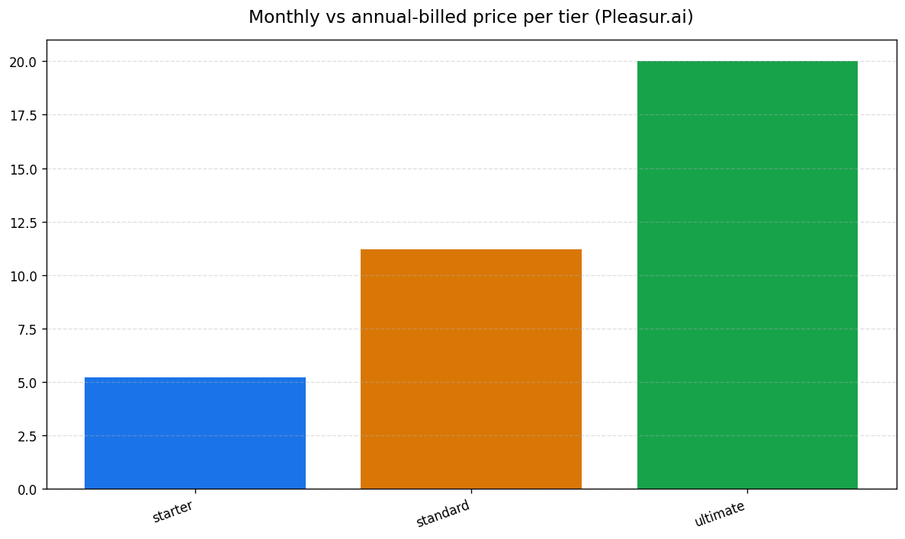

What Do AI Companion Coins Actually Cost? (2026)
A coin is a metered unit of media. On Pleasur.ai an AI image or voice note costs 10 coins, a phone call costs 50 coins per minute, and text chat is unlimited — and the tiers run $12.99/mo for 1,500 coins, $27.99/mo for 5,000, and $49.99/mo for 10,000 (pricing — pleasur.ai/pricing). Those published numbers let you price out a month before you ever enter a card.
That is the part the category hides. Every "how much does Candy AI cost" review you read ends with the same shrug: tokens, roughly 2–5 per image, confirm in the app. Nobody can tell you what you'll pay, because Candy.ai publishes no canonical per-action token spec. So you sign up, start spending, and find out the price by watching a counter drop. It doesn't have to work that way — once a platform publishes both its coin allowance and the cost of each action, you can do the arithmetic up front instead of discovering it after.
This page defines a coin, gives you the exact numbers, shows the math for every tier, compares published metering against the estimated kind, and walks you through pricing out your own month. A short FAQ at the end covers trials, billing, and cancellation. If you want the wider buying decision first, the AI Girlfriend Apps hub maps the whole category.
![Horizontal editorial vector hub-and-spoke diagram for a premium tech-lifestyle blog explaining how one in-app companion coin is spent, minimalist editorial layout, calm explanatory mood. Canvas 3:2, flat off-white background hex #FAFAF7 with faint paper grain and generous whitespace. Composition, one large matte brushed-gold coin glyph hex #C9A227 anchored left-center spanning about 18 percent width with a subtle bevel rim and a soft engraved swirl and no currency symbol, three thin arrows fan rightward to three evenly stacked rounded rectangle cost cards occupying the right 60 percent, a fourth greyed-out card sits beneath at 40 percent opacity with a dashed border. Cost cards are soft-touch matte white hex #FFFFFF with a 1px cool-grey border hex #E2E2DD and a faint drop shadow, each holding one tiny line icon, picture frame then sound wave then phone handset, beside a short label. Objects only, no people, the coin reads confident and central, the cards orderly and reassuring like a clean receipt. Style, clean Scandinavian infographic vector meets modern fintech onboarding illustration, NOT 3D, NOT skeuomorphic, NOT anime, NO photographic texture. Flat even lighting, no harsh shadows, crisp vector edges, soft cast shadow beneath each raised card. Palette, background #FAFAF7, coin #C9A227, cards #FFFFFF, borders #E2E2DD, arrows and primary labels #2B2B2B, greyed text #9A9A94, single arrow accent #6C63FF. Bold lowercase humanist sans labels, exact strings only, 1 coin, AI image = 10, voice note = 10, phone call = 50 per min, text = 0 unlimited. Explanatory tidy premium-fintech-clean, Awwwards Behance site-of-the-day infographic quality, 4k.](../images/what-do-ai-companion-coins-actually-cost/image-1-horizontal-editorial-vector-hu.png)
What an AI companion "coin" actually is
An AI companion coin is a prepaid credit that pays for one piece of generated media. On Pleasur.ai a coin costs the same on every tier: an AI image is 10 coins, a voice note is 10 coins, a phone call is 50 coins per minute, and text chat is unlimited. Plans run $12.99/mo for 1,500 coins, $27.99/mo for 5,000, and $49.99/mo for 10,000 (pricing — pleasur.ai/pricing).
"Coin" and "token" are the same idea wearing different names. One platform calls them coins, another calls them tokens or credits or gems, but the mechanic is identical: a metered unit you spend on media.
Why meter media at all? Text is cheap to generate. Images, voice synthesis, and live calls run real compute, so platforms charge per action instead of folding the cost into a flat fee. Take AI Image Generation — every picture you create draws on a model that costs money to run, which is exactly why it lands at 10 coins each rather than free. Per-action metering is now the category norm: competing apps from Candy.ai to its rivals all bill media against a token or credit balance.
![Horizontal editorial vector concept illustration for a premium tech-lifestyle blog contrasting a transparent metered media unit against an opaque token, calm explanatory mood, minimalist editorial layout. Canvas 3:2, flat off-white background hex #FAFAF7 with faint paper grain and generous whitespace, a thin vertical hairline divider hex #E2E2DD splits the canvas into two equal halves. Left half labeled coin, composition: one large matte brushed-gold coin glyph hex #C9A227 anchored upper-center spanning about 22 percent width with a subtle bevel rim and a soft engraved swirl and no currency symbol, three thin arrows fan downward to three small rounded rectangle cost cards in a tidy column, each card soft-touch matte white hex #FFFFFF with a 1px cool-grey border hex #E2E2DD and a faint drop shadow holding one tiny line icon, picture frame then sound wave then phone handset, beside a short numeral. Right half labeled token, composition: one large flat slate-grey hexagonal token glyph hex #9A9A94 anchored upper-center spanning about 22 percent width, matte and featureless, a single thin arrow drops to one rounded rectangle card hex #FFFFFF with a dashed cool-grey border holding a large centred question-mark glyph, faint blurred haze around the card to read as uncertainty. Objects only, no people, the left side reads confident and itemized like a clean receipt, the right side reads unknowable and hazy. Style, clean Scandinavian infographic vector meets modern fintech onboarding illustration, NOT 3D, NOT skeuomorphic, NOT anime, NO photographic texture, no real brand logos or trademarks, fictional generic glyphs only. Flat even lighting, no harsh shadows, crisp vector edges, soft cast shadow beneath each raised card. Palette, background #FAFAF7, coin #C9A227, token #9A9A94, cards #FFFFFF, borders and divider #E2E2DD, primary labels #2B2B2B, muted text #9A9A94, single accent #6C63FF on the left arrows. Bold lowercase humanist sans labels, exact strings only, coin, token, image = 10, voice = 10, call = 50 per min, and one question mark on the right card. Explanatory tidy premium-fintech-clean, Awwwards Behance site-of-the-day infographic quality, 4k.](../images/what-do-ai-companion-coins-actually-cost/image-1-horizontal-editorial-vector-co.png)
The thing that varies between platforms isn't whether they meter. It's whether they tell you the rate. Some publish a clear per-action price you can multiply. Others bury it, and you only learn the cost by spending. That gap is the whole story — and we unpack it in our guide to choosing an NSFW AI companion, where pricing transparency is one of the eight criteria.
Now that a coin has a fixed price, the next question is what a month's worth of them buys.
What each tier's coins actually buy (the math)
Because the per-action cost is published, you can turn any tier into a hard ceiling of images, voice notes, or call-minutes. Here's the arithmetic the rest of the category hedges on.
Start with Starter. 1,500 coins buys up to ~150 images, or ~150 voice notes, or ~30 minutes of calls — or any mix of the three (rates published at pleasur.ai/pricing). Step up to Standard and 5,000 coins covers ~500 images or ~100 call-minutes. Ultimate's 10,000 coins doubles that again: ~1,000 images or ~200 call-minutes.
The mix is where it gets real. A coin spent on a call is a coin not spent on an image. Say you want 80 images and a few calls this month: that's 800 coins for the pictures, leaving 700 coins — about 14 minutes of calls — before you hit Starter's 1,500 ceiling. You don't have to guess at that number. You multiply.
You can watch this happen live. Build a character in the AI Companion Creator, then generate images of them right inside the chat. Each picture ticks the coin counter down by exactly 10, so "150 images = 1,500 coins" stops being abstract the moment you see the balance move. (For the build-a-companion setup itself, the companion-choosing guide walks the create flow step by step.)

Here is every tier at a glance.
| Tier | Monthly | Annual (per-mo) | Coins/mo | ≈ Images (10 ea) | ≈ Voice notes (10 ea) | ≈ Call-minutes (50/min) |
|---|---|---|---|---|---|---|
| Starter | $12.99 | $5.20 (saves $93/yr) | 1,500 | ~150 | ~150 | ~30 |
| Standard | $27.99 | $11.20 (saves $201/yr) | 5,000 | ~500 | ~500 | ~100 |
| Ultimate | $49.99 | $20.00 (saves $360/yr) | 10,000 | ~1,000 | ~1,000 | ~200 |
Text messages are unlimited on every tier; only images, voice notes, and calls spend coins. Prices and rates published at pleasur.ai/pricing.
This is information no page-1 result has, because Candy.ai publishes no per-action spec to do the math from. Compare what an opaque allowance gets you. Candy.ai's published subscription runs about $12.99/mo month-to-month (advertised as low as ~$5.99/mo on its annual plan) and includes a monthly token allowance (Candy AI 2026 pricing review). Third-party reviews peg the spend at a reviewer-estimated 2–5 tokens per image — so a typical monthly allowance lands somewhere between ~20 and ~50 images, and you can't price a call at all, because no per-minute rate is published anywhere. Pleasur.ai's 1,500 published coins buys a countable ~150 images or ~30 call-minutes. The dollar figures may land in the same ballpark; the knowability doesn't. One you can plan around. The other you discover after the fact.
Those numbers come straight off the price page. With the ceiling clear, the next thing to sort out is what you're actually signing up for when you subscribe.
Free vs paid, monthly vs annual
Most AI companion platforms — Pleasur.ai included — are paid services with a trial, not free apps. And the cheap "annual" sticker you see quoted everywhere is a 12-month commitment billed up front, not a month-to-month rate.
There's no permanent free tier. A trial gets you in the door, then it becomes a subscription. That's the category pattern, and it's worth knowing before you read a headline price as "free forever."
Annual billing cuts the monthly number hard. Starter drops from $12.99 to an effective $5.20 a month, a $93 saving over the year (pricing — pleasur.ai/pricing). Standard falls to $11.20 and Ultimate to $20.00, saving $201 and $360 respectively (pricing — pleasur.ai/pricing). But you pay for the whole year on day one. Month-to-month costs more per month and cancels faster — the trade is flexibility against price.
Here's the trap. That low annual figure is the number reviews love to quote, and it's the one readers misread as the monthly rate. Candy.ai's "$5.99/mo" headline, for instance, is its 12-month price; the actual one-month rate is closer to $12.99 (Candy AI 2026 pricing review). Same product, wildly different first bill. When you compare apps, line up the same billing period or you're comparing a yearly commitment against a monthly one.
And the sticker isn't the whole bill. On opaque platforms, the monthly allowance is a floor, not a ceiling: when it runs dry, you buy à-la-carte top-up packs to keep going. Reviewers put those packs anywhere from roughly $9.99 for the smallest to $299.99 for the largest, so the real monthly cost can climb well past the headline subscription — and you only find out once the counter hits zero mid-month. The cheap sticker hides the spend it can't show you in advance.
That gap between sticker and reality gets widest when a platform won't publish its per-action rate — which is exactly where transparent and opaque metering split apart.

Transparent vs opaque metering: the difference that decides your bill
Two platforms can both meter media by credits, but only one lets you do the math before you pay — and that single difference separates a predictable bill from a surprise.
A transparent model publishes two things: the allowance and the per-action cost. You multiply, and you know your ceiling. Pleasur.ai's 10/10/50 rates are published on every tier, so a reader with a calculator can price out a month from the marketing page.
An opaque model publishes the allowance but not the rate. So reviewers fill the gap with estimates — ~2–5 tokens an image, ~3 tokens a call-minute, always flagged "indicative only, confirm in-app" — and you find out the real cost by spending. Every competitor token figure in the table below is reviewer-estimated, not vendor-published (reviewer token estimates). Candy.ai, by a 2026 review's own account, publishes its subscription price but not a canonical per-action spec.
![Horizontal editorial vector concept illustration for a premium tech-lifestyle blog contrasting two billing paths, a transparent published-rate path against an opaque hidden-rate path, calm explanatory mood, minimalist editorial layout. Canvas 3:2, flat off-white background hex #FAFAF7 with faint paper grain and generous whitespace, a thin vertical hairline divider hex #E2E2DD splits the canvas into two equal halves. Left half labeled published rate, composition: a clean left-to-right path of three small rounded rectangle nodes connected by two bold rightward accent arrows hex #6C63FF, node one a tiny multiply glyph, node two a tiny list-with-line-items receipt glyph, node three a crisp itemized bill card soft-touch matte white hex #FFFFFF with a 1px cool-grey border hex #E2E2DD and a faint drop shadow showing three short aligned numeral rows and a single bold total row, the whole row reads orderly and predictable. Right half labeled hidden rate, composition: a left-to-right path of three nodes connected by two faint dashed grey arrows hex #9A9A94, node one a small slate-grey opaque box, node two a blurred haze blob, node three a bill card hex #FFFFFF with a dashed cool-grey border holding a single large centred question-mark glyph and a wavy uncertain bottom edge, the row reads unknowable and surprising. Objects only, no people, left side confident and itemized like a clean receipt, right side hazy and opaque. Style, clean Scandinavian infographic vector meets modern fintech onboarding illustration, NOT 3D, NOT skeuomorphic, NOT anime, NO photographic texture, no real brand logos or trademarks, fictional generic glyphs only. Flat even lighting, no harsh shadows, crisp vector edges, soft cast shadow beneath each raised card. Palette, background #FAFAF7, cards #FFFFFF, borders and divider #E2E2DD, transparent-path arrows and accents #6C63FF, opaque-path arrows and muted text #9A9A94, primary labels #2B2B2B. Bold lowercase humanist sans labels, exact strings only, published rate, hidden rate, you multiply, known total, and one question mark on the right bill. Explanatory tidy premium-fintech-clean, Awwwards Behance site-of-the-day infographic quality, 4k.](../images/what-do-ai-companion-coins-actually-cost/image-2-horizontal-editorial-vector-co.png)
| What you pay for | Published per-action cost (transparent model) | Typical opaque/estimated competitor cost | Why it matters |
|---|---|---|---|
| AI image | 10 coins (published) | ~2–5 tokens, reviewer-estimated, "confirm in-app" | You can't budget a number you have to guess |
| Voice note | 10 coins (published) | Not published; estimated per use | Voice burns credits fast at unknown rates |
| Call (per minute) | 50 coins/min (published) | ~3 tokens/min, reviewer-estimated, indicative only | Calls are the fastest spend — guessing hurts most |
| Text messages | 0 coins (unlimited, published) | Usually unlimited, but rarely stated plainly | The free part should be in writing |
Competitor figures are reviewer estimates, not vendor-published specs (reviewer token estimates).
This is the real differentiator, and it's worth being precise about it. The win isn't that one platform is unmetered — Pleasur.ai meters media by coins like everyone else. The win is that the rate is published, so the metering is something you can plan around instead of something that happens to you. For the fuller competitor breakdown, our review of whether Candy AI is safe lines up the alternatives side by side.
With the difference clear, you can run your own numbers.
How to calculate your own real monthly cost
You can price out a month in three steps: estimate your media use, multiply by the published per-action coin cost, then pick the cheapest tier whose allowance covers it.
Step 1 — jot your rough monthly use. Be honest about it. Say 60 images, 20 voice notes, and 15 minutes of calls.
Step 2 — multiply by the published rates. 60 images × 10 = 600 coins. 20 voice notes × 10 = 200 coins. 15 call-minutes × 50 = 750 coins. Total: 1,550 coins. Round up to the tier that covers it — here, Standard's 5,000-coin allowance, with room to spare.
Step 3 — decide monthly vs annual based on how long you'll realistically keep using it, then re-check the live price page, since rates change.
Three quick profiles, all run on published numbers rather than estimates:
- Light — 30 images, no calls: 300 coins. Starter (1,500) covers it four times over.
- Moderate — 100 images, 10 voice notes, 10 call-minutes: 100×10 + 10×10 + 10×50 = 1,600 coins. Standard fits comfortably.
- Heavy — 300 images, 60 call-minutes: 3,000 + 3,000 = 6,000 coins. Ultimate's 10,000 leaves headroom.
Pro tip: on a platform with published rates, you can run this whole calculation from the price page before you enter a card. On a platform that hides the per-action rate, step 2 is a guess — and a guess is exactly what you're trying to avoid. For the wider "is this the right platform for me" decision, the NSFW companion-choosing guide runs the same three-step discipline across every buying criterion.
![Horizontal three-step editorial flow diagram for a tech-lifestyle blog showing how a reader calculates their own monthly AI-companion cost, instructional friendly mood. Canvas 3:2, flat off-white background hex #FAFAF7 with faint paper grain. Composition, three equal rounded-rectangle step cards arranged left-to-right across about 80 percent width separated by two bold rightward arrows, a small circled step number top-left of each card. Step cards matte white #FFFFFF with 1px border #E2E2DD and soft drop shadow, card 1 holds three tiny line icons picture frame then sound wave then phone handset over a short label, card 2 shows a small multiply glyph with three numerals, card 3 shows a tiny price-tag icon, step circles are solid accent #6C63FF with white numerals 1 2 3. Objects only, no people, the row reads as a confident easy three-step recipe. Style, clean Scandinavian infographic vector meets fintech onboarding flow, NOT 3D, NOT skeuomorphic, NOT anime, NO photo texture. Flat even lighting, crisp vector edges, soft cast shadows beneath cards. Palette, background #FAFAF7, cards #FFFFFF, borders #E2E2DD, step circles and arrows #6C63FF, labels and icons #2B2B2B. Bold lowercase humanist sans labels, exact strings only, estimate monthly use, multiply by coin cost 10 / 10 / 50, pick cheapest tier that covers it. Instructional tidy premium-clean, Awwwards Behance site-of-the-day infographic quality, 4k.](../images/what-do-ai-companion-coins-actually-cost/image-4-horizontal-three-step-editoria.png)
One thing the math can't tell you is what shows up on your statement. So the trust questions are worth a quick pass.
Trust and billing: trials, statements, and cancellation
Before any coin math matters, most readers want to know it's safe to pay. Here's the short version on trials, what posts to your statement, and how cancellation works.
Trial-to-subscription is the norm across the category: a short trial, a card required up front, cancel anytime. The card is the part people forget — read the renewal terms so the trial doesn't quietly roll into a charge.
Two more things matter to this audience. The statement descriptor — what the charge is labeled on your bank statement — and the refund window. These vary by platform; Pleasur.ai offers a 7-day money-back window across its plans, but confirm the current terms on the site before you subscribe. For the checkout mechanics themselves — which apps take cards, which take crypto, how discreet the billing is — our guide to NSFW AI companion payment methods covers that ground in detail.
This is cost-adjacent, not the main event. The FAQ below closes out the specific questions people still type into search.
FAQ
Quick answers to the cost questions people ask most.
The questions below become answer-engine-eligible automatically — this page's template emits the structured data for the FAQ and article with no extra work needed.
How much does an AI girlfriend or companion cost per month? Plans run from $12.99/mo at the entry tier to $49.99/mo at the top tier on Pleasur.ai (pricing — pleasur.ai/pricing). Your real cost depends on how much metered media — images, voice notes, calls — you use on top of unlimited text.
What is a coin or token used for? It pays for generated media: images, voice notes, and calls. Text chat is unlimited on Pleasur.ai, so only media spends coins. "Coin" and "token" describe the same metered-credit mechanic.
How many coins does an image or a call use? On Pleasur.ai: an image is 10 coins, a voice note is 10 coins, and a phone call is 50 coins per minute (pricing — pleasur.ai/pricing). Those rates are published and identical on every tier.
Is there a free version? There's no permanent free tier. A trial gets you in, and after that it's a subscription. Watch the renewal terms before the trial ends.
Can I calculate my cost before subscribing? Yes — estimate your monthly media use, multiply by the published per-action coin cost (10 / 10 / 50), and pick the cheapest tier whose allowance covers it. You can do this from the price page before entering a card.
Is it safe to pay, and can I cancel? Trials require a card and cancel anytime. Check the live statement descriptor and refund window before subscribing, and read the renewal terms so a trial doesn't roll over unexpectedly.
The bottom line
The price of a coin isn't the mystery the category makes it out to be. It's a published number you can multiply: 10 coins an image, 50 coins a call-minute, text unlimited. The only real question is whether a platform shows you that number before you pay — or makes you discover it after.
Run your own monthly use through the three-step math, then check the live price page for current rates. For the wider buying decision, our guide to choosing an NSFW AI companion takes the same honest-math approach across every criterion that matters.
Editor notes / Citation verification
First-party facts (verified live against pleasur.ai/pricing on 2026-06-16): all Pleasur.ai prices ($12.99/1,500, $27.99/5,000, $49.99/10,000; annual $5.20/$11.20/$20.00 with $93/$201/$360 savings), per-action rates (image 10, voice 10, call 50/min), unlimited text, and the 7-day money-back guarantee match the live page exactly. No correction needed.
Candy.ai prices reconciled (the quality-gate flag): the live candy.ai/pricing page returned 404 to automated fetch, so figures are sourced to the most consistent recent third-party reviews. Two independent 2026 reviews — StartupHub (2026) and RoboRhythms (April 2026) — both put Candy.ai at ~$12.99/mo month-to-month and ~$5.99/mo on the annual plan (billed ~$71.88 upfront). One outlier (aigirlfriendguide.net) lists $13.99/$8.99/$3.99, likely a regional/A-B variant; the draft uses the corroborated $12.99/$5.99 cluster. The earlier draft's "$5.99 annual" stands; the confusing duplicate framing was kept but every Candy figure is now explicitly labeled reviewer-cited with the source + date.
Candy.ai per-action token rates: kept as reviewer-estimated. Collapsed the draft's two ranges (earlier "~2–4" and "2–5") to a single consistent 2–5 tokens/image range, traced to RoboRhythms (April 2026) ("2 to 5 tokens per image") and corroborated by StartupHub ("4 tokens"). Call estimate (~3 tokens/min) traces to the same RoboRhythms source ("voice synthesis runs about 3 tokens per minute"). All framed as estimates, not Candy-published fact.
Top-up pack range ($9.99–$299.99): sourced to RoboRhythms (April 2026) (100 tokens / $9.99 up to 3,500 tokens / $299.99). Labeled reviewer-cited.
Editor notes / Voice-flagged statements (review)
These are opinionated/house-voice statements, NOT auto-linked. Editor decides per case:
- "Every 'how much does Candy AI cost' review you read ends with the same shrug" (intro) — rhetorical population claim.
- "This is information no page-1 result has" — superlative comparative; defensible but unverifiable as an absolute.
- "Per-action metering is now the category norm" — population/trend claim (linked to a supporting review, but the "norm" framing is editorial).
- "Most AI companion platforms — Pleasur.ai included — are paid services with a trial, not free apps" — population quantifier.
- "There's no permanent free tier" / "That's the category pattern" — category-wide generalizations.
- "the number reviews love to quote" — generalization about reviewer behavior.
- "Trial-to-subscription is the norm across the category" — population claim (Candy free-tier-with-card behavior supports it, but stated as category-wide).